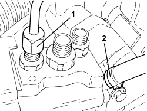

1056F72 PRESSURE PUMP - R.R.
- Path
- Procedures > 10 ENGINE > 1056 PETROL INJECTION SYSTEM > 1056F PETROL DIRECT INJECTION SYSTEM > 1056F72 PRESSURE PUMP - R.R.
- Kind
- repair procedure (removal / refitting; the operation number is the code)
- Applies to
- engines: 2.2 JTS, 3.2 JTS; all production periods
- Interactive page
- https://sloeber94.github.io/elrnDB-aBrrSpdr/en/#/946001925
Applies to: engines: 2.2 JTS; all production periods
 Removing
Removing
 Refitting
RefittingOp. 5530B52 BATTERY SUPPORT/DRIP TRAY - R.R
Op. 1056F74 LOW PRESSURE PIPE TO FUEL PRESSURE PUMP - R.R.
Op. 1056F76 HIGH PRESSURE PIPE FROM PRESSURE PUMP TO SINGLE FUEL MANIFOLD PIPE - R.R.
1. Disconnect the fuel supply pipe rapid connector, pressure pump side.
2. Undo the bolts (2a) and remove the pressure pump (2b).

Applies to: engines: 2.2 JTS; all production periods
Refitting
Removing1. Position the pressure pump (1a) in its housing and secure it tightening the bolts (1b) to the recommended torque.
Component | Fastening | dia | Value (daNm) | Validity |
|---|---|---|---|---|
Pressure pump | Bolt | M6 | 1.0 | 1.9 JTS 2.2 JTS |
2. Connect the fuel supply pipe rapid connector, pressure pump side.

Applies to: engines: 2.2 JTS; all production periods
Op. 1056F76 HIGH PRESSURE PIPE FROM PRESSURE PUMP TO SINGLE FUEL MANIFOLD PIPE - R.R.
Op. 1056F74 LOW PRESSURE PIPE TO FUEL PRESSURE PUMP - R.R.
Applies to: engines: 3.2 JTS; all production periods
Removing
RefittingOp. 1056F74 LOW PRESSURE PIPE TO FUEL PRESSURE PUMP - R.R.
Op. 1056F76 HIGH PRESSURE PIPE FROM PRESSURE PUMP TO SINGLE FUEL MANIFOLD PIPE - R.R.
Op. 1056F77 SINGLE FUEL MANIFOLD PIPES HIGH PRESSURE PIPE - R.R.
Op. 1056F75 FUEL RETURN PIPE FROM PRESSURE PUMP - R.R.
1. Loosen the connector for the fuel return pipe, pressure pump side and place it to one side.
2. Loosen the band and disconnect the fuel vapour pipe from the pressure pump.

Applies to: engines: 3.2 JTS; all production periods
1. Disconnect the electrical connection from the pressure regulator.
Description | Connector | |
|---|---|---|
1 | Fuel pressure regulator |
2. Undo the bolts (2a) fixing the pressure pump (2b) and remove it complete with pressure sensor.
- Remove the pressure pump and control cam interface cup (piston).

Applies to: engines: 3.2 JTS; all production periods
Refitting
Removing- Place the pressure pump and control cam interface cup (piston) in its seat.
- Place the pressure pump in its housing complete with pressure sensor and secure it using the bolts.
- Connect the electrical connection of the pressure regulator.
- Connect the fuel vapour pipe to the pressure pump and secure it using the band.
- Place the fuel return pipe in its housing, pressure pump side and tighten the connector.
Op. 1056F75 FUEL RETURN PIPE FROM PRESSURE PUMP - R.R.
Op. 1056F77 SINGLE FUEL MANIFOLD PIPES HIGH PRESSURE PIPE - R.R.
Op. 1056F76 HIGH PRESSURE PIPE FROM PRESSURE PUMP TO SINGLE FUEL MANIFOLD PIPE - R.R.
Topics linked from this page (7)
- 1056F74 LOW PRESSURE PIPE TO FUEL PRESSURE PUMP - R.R.
- 1056F75 FUEL RETURN PIPE FROM PRESSURE PUMP - R.R.
- 1056F76 HIGH PRESSURE PIPE FROM PRESSURE PUMP TO SINGLE FUEL MANIFOLD PIPE - R.R.
- 1056F77 SINGLE FUEL MANIFOLD PIPES HIGH PRESSURE PIPE - R.R.
- 5530B10 BATTERY - R+R
- 5530B52 BATTERY SUPPORT/DRIP TRAY - R.R
- N077 FUEL PRESSURE REGULATOR